la_mort <-
read_csv("https://www.dropbox.com/scl/fi/fzsnhfd3lq80v2o3sag6c/la_mort.csv?rlkey=h1vyjm2b8ppgejgsg3e8evm7i&dl=1")Tutorial 3 - Data Importing in RStudio Tutorial
Importing Louisiana Mortality Data into RStudio
Let’s go back to the scenario I posed at the beginning of the semester:
You are a legislative policy advisor working for a Congressional representative from the state of Louisiana. The representative is interested in sponsoring legislation to direct resources to people living in Cancer Alley, an 85-mile tract of land along the Mississippi River where residents have historically experienced high rates of cancer. As part of the policy development process, the representative has tasked you with collecting data on cancer incidence rates for people living in Cancer Alley over the past 20 years and creating a visualization that depicts the disproportionate cancer burden that these people face.
Over the next few weeks, we’ll work through this scenario using mortality data from the National Vital Statistics System collected by the CDC to create a visualization of cancer mortality rates across Louisiana parishes with a focus on Cancer Alley.
CDC WONDER
It turns out that the CDC provides a nice tool for analyzing mortality rates over time and across different places in the U.S. We’ll take a quick look at this tool before we start working with the underlying disaggregated data.
Go to the CDC Mortality Statistics Page and scroll down to the “CDC WONDER interactive database” link at the bottom of the page. After clicking on that link, you should see something like this:
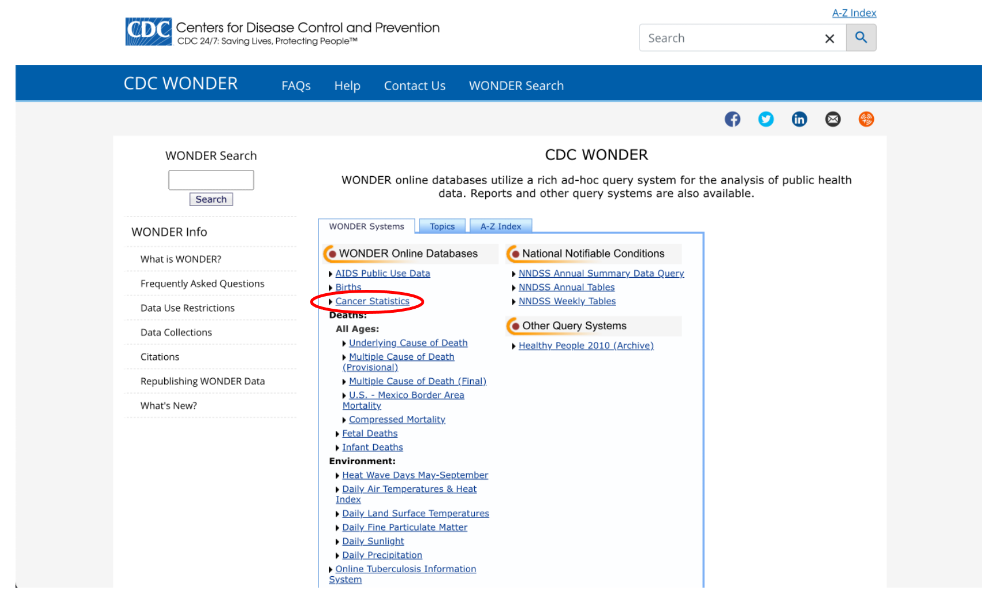
Notice that there’s a link for something called “Cancer Statistics”. That sounds promising, let’s check that out.
Looks like they have data on cancer mortality from 1999 to 2020. Click on “Data Request” to see more options.
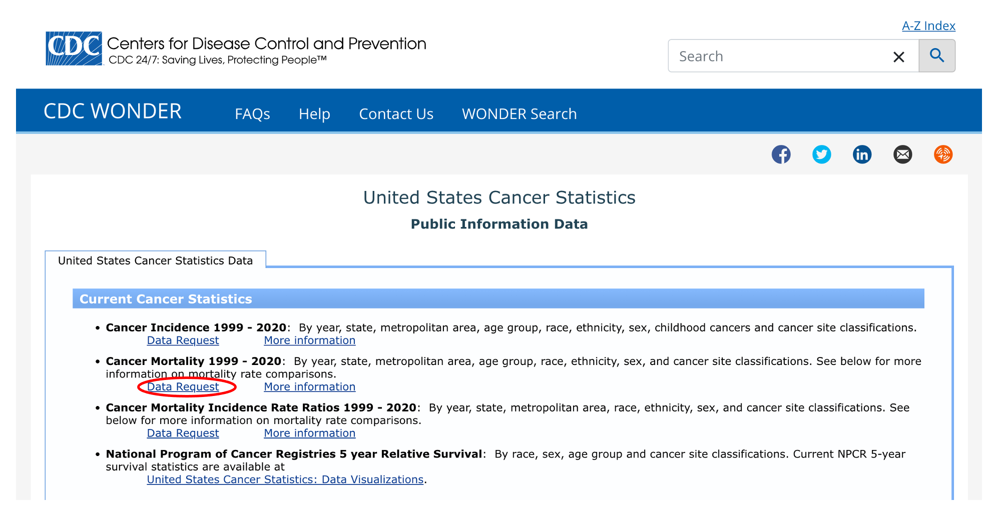
We’ll quickly come to see that this isn’t going to work for our purposes. Take a look at the “Group Results By” dropdown menu:
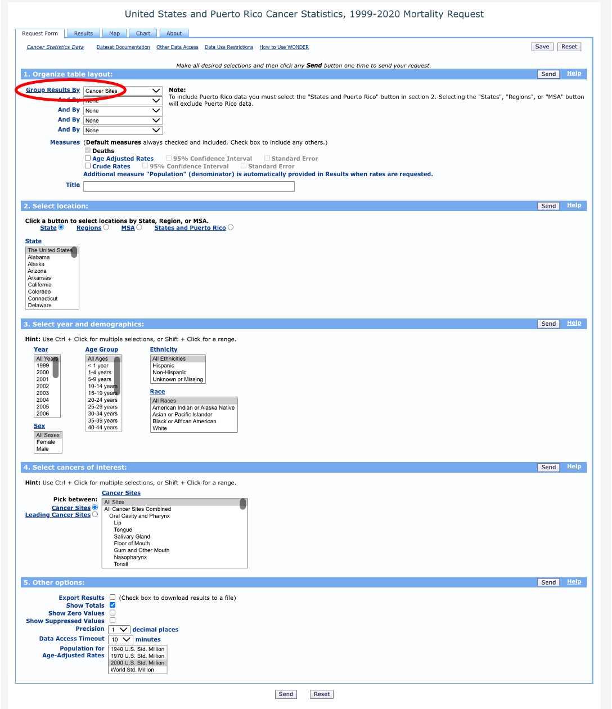
You’ll notice a few options under “Location”, including Region, Division, State, MSA, and States and Puerto Rico. Region, Division, and State are all too aggregate to allow us to examine cancer mortality across parishes in Louisiana. MSA, on the other hand, is too disaggregate and only includes data for Baton Rouge and New Orleans.
Luckily, there is another option that will allow us to examine cancer mortality at the county/parish level. Go back to the Wonder menu and click on “Underlying Cause of Death”.
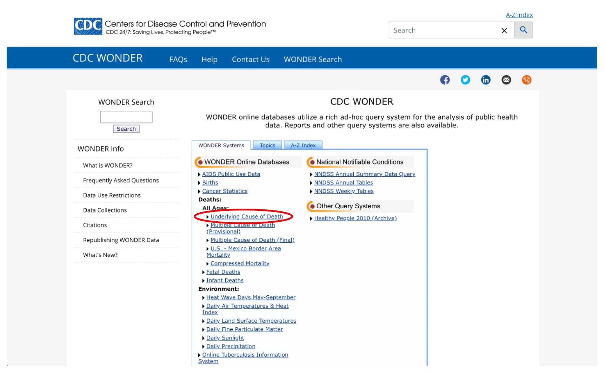
We have a few options here that we don’t need to get into right now, so let’s just click on the first link: “2018-2021: Underlying Cause of Death by Single-Race Categories”.
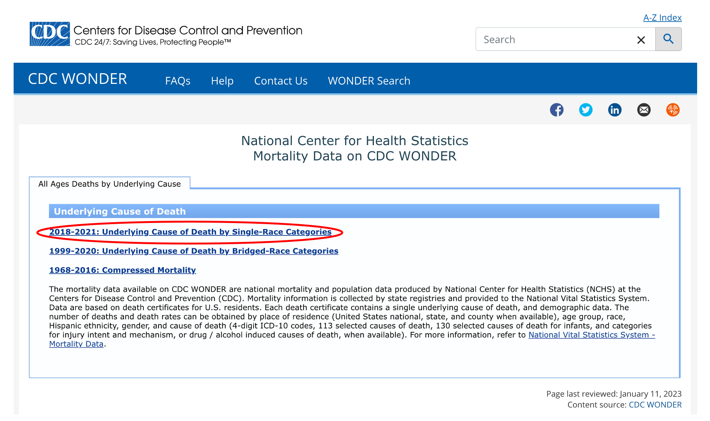
Agree to the data use restrictions and you’ll see a request form with a lot of options that we can choose from. Start by clicking the “Group Results By” dropdown and you’ll notice that we can select “County” as our geographic unit. We can give our data request a title - let’s call it “Louisiana Cancer Deaths by Parish, 2018”.
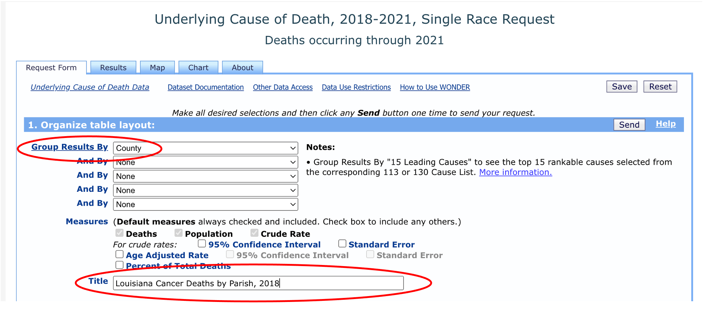
Next, we’ll need to select “Louisiana” as our location. We don’t need to change the “urbanization” category.
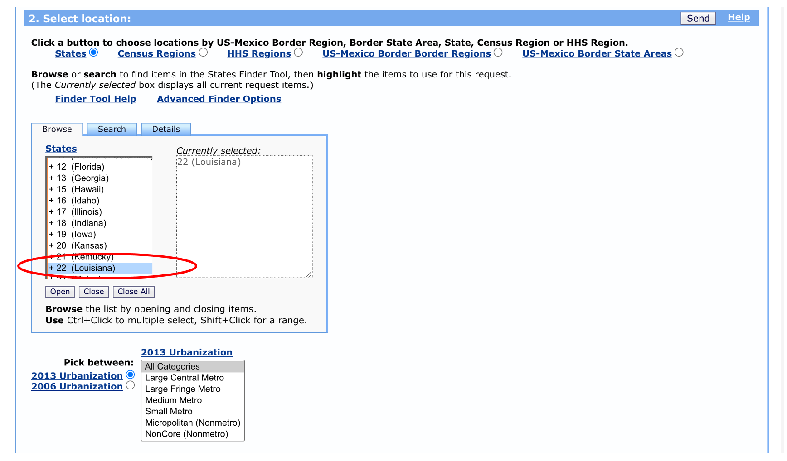
We have the option to select specific age ranges, sexes, races, and Hispanic ethnicity, but let’s leave these as the defaults for now. We’ll select data from 2018 for illustration purposes, but we could pick multiple years if we wanted to.
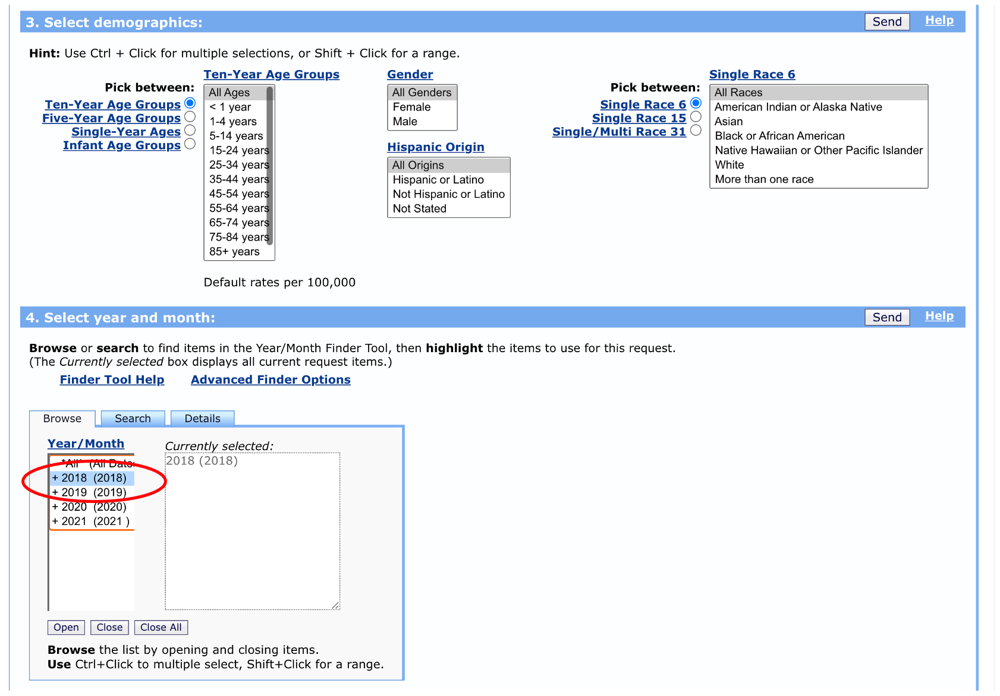
Finally, we can leave the weekday, autopsy, and place of death options on their default selections. We want to choose “neoplasms” as the cause of death (we could get more detailed here with specific cancer sites, but let’s keep it general for now). We don’t need to make any changes to the “Other options” section.
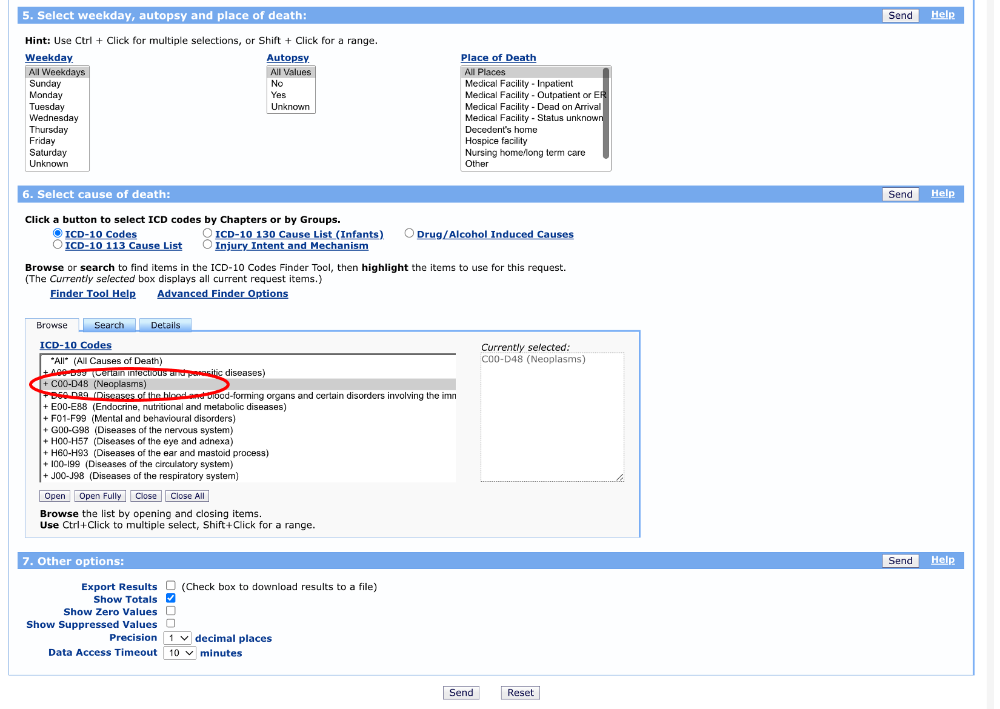 Once you click “send” you should see a table that includes parish, counts of cancer deaths, parish population, and death rates.
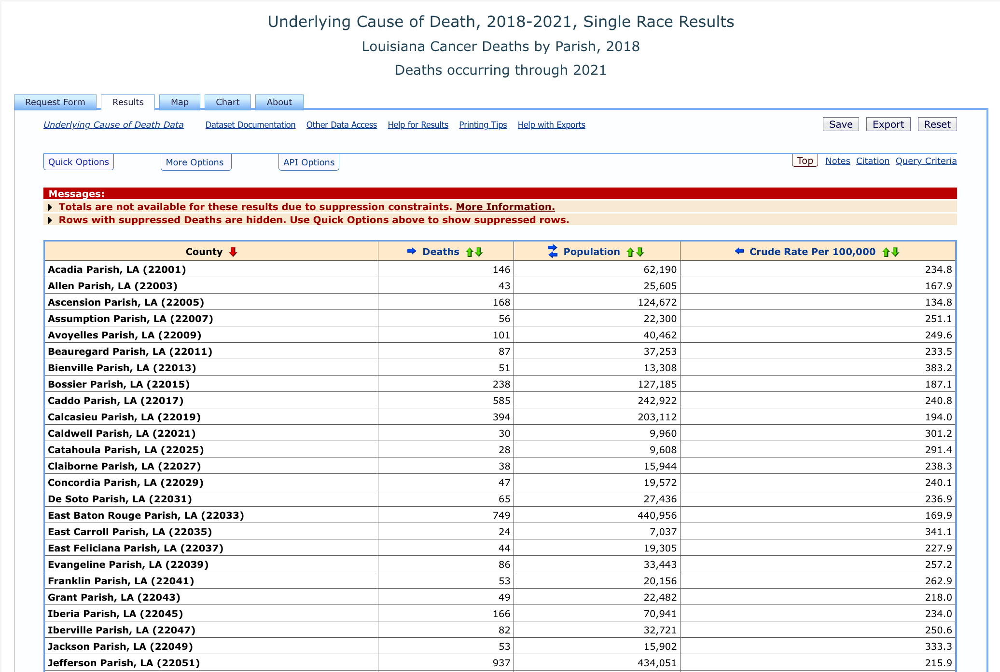
We can even click the “Map” tab and get a nice visual of cancer rates across Louisiana.
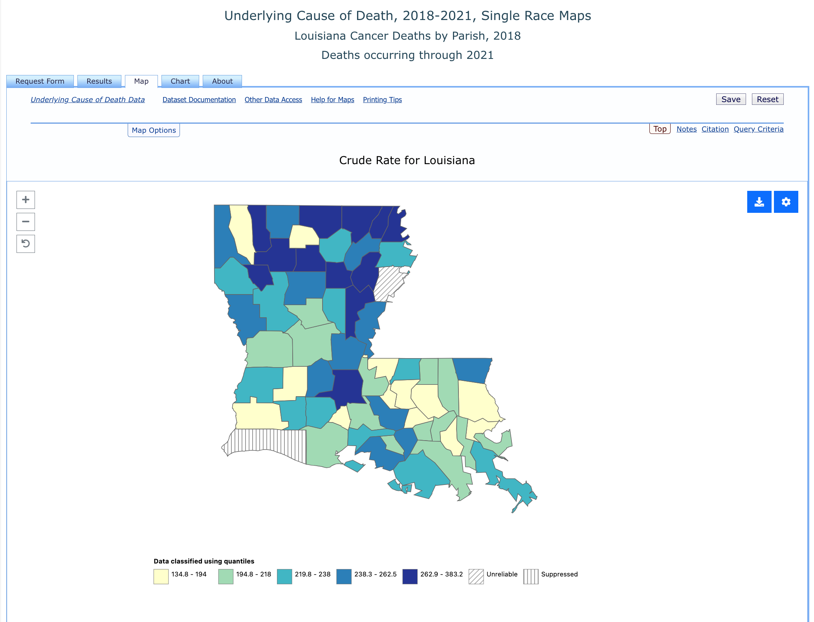
NVSS Mortality Files
The aggregate tools that the CDC provides to track cancer mortality are great, but having access to the underlying disaggregated data provides us with a LOT of additional flexibility. To analyze the disaggregated data, we’ll need to use RStudio, but let’s first take a look at the data files on the CDC website. Navigate back to the CDC Mortality Statistics Page and click on the “Public-Use Data Files” link at the bottom of the page. About halfway down, you’ll see a section called “Mortality Multiple Cause Files”.
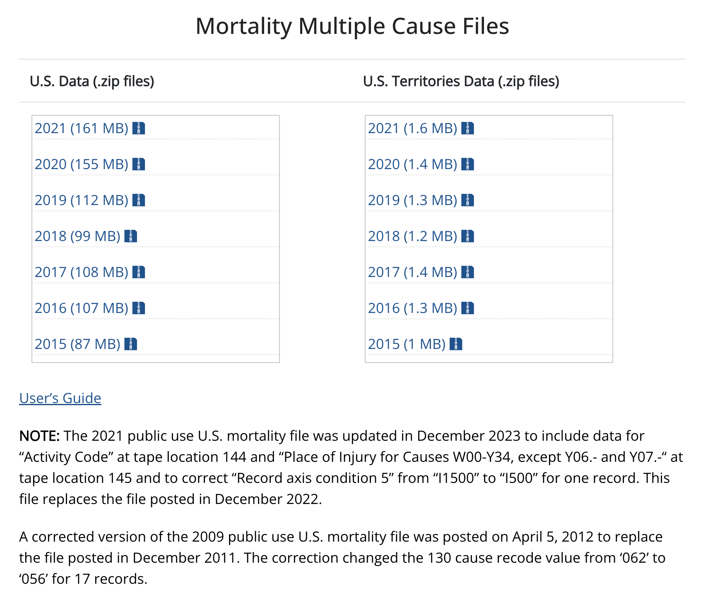
These zip files contain the underlying data that the CDC Wonder query tool uses to construct the tables and maps we saw. You won’t need to download these files for this tutorial - I’ve created a file from this data that we’ll use in class. But take a second to click on the “User’s Guide” link. This will take you to the documentation page for the mortality files. Once we load the data in RStudio, we can come back here to see how the variables are defined.
Load the mortality file into RStudio using the following command. You can either do this directly in the Console Window’s command line or open an R Script file and run the code from there. We’re not going to be saving any of our work in this tutorial or creating a report, so there’s no need to use Markdown.
We’re loading a .csv file that I’ve stored in a Dropbox folder into an R data frame that we’ll call la_mort. Note that the read_csv function is part of the readr package, so you’ll need to be sure you’ve loaded that package before using it.
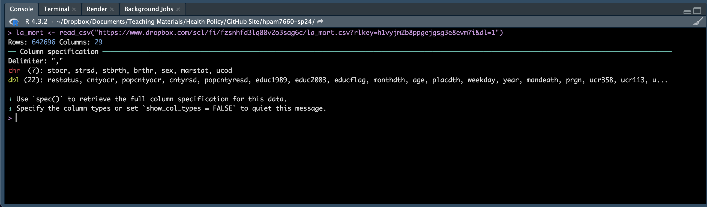
RStuido tells us that the data frame has 642,696 rows and 29 columns - that’s a LOT of data rows. In fact each row of data in the data frame corresponds to a Louisiana resident’s death between 2005 and 2019. RStudio also tells us that, of the 29 columns, 7 contain data stored as characters “chr” and 22 contain data stored as double precision floating point numbers “dbl” (this is just a fancy way of saying a field that allows long decimals).
We can view the data frame tibble by typing la_mort into the Console Window command line (or adding this line to your R Script) and hitting enter. This will allow us to see the first 10 rows of the data frame along with a selection of the variables. We don’t yet know what all of these variables mean, but we’ll work on that in the upcoming classes. For now, let’s take a look at some basic descriptives using a few easy-to-identify variables.
A couple of new commands are going to be helpful here. First, let’s look at the table command, which will help us preview the data we loaded. Type the following into the Console Window command line or add it to your R Script and run it:
table(la_mort$year)First note that the syntax is a little different here. We’re not typing the typical new_data_frame <- old_data_frame.... Instead, we type the data frame and the variable we’re interested in separated by the dollar sign. After running this command, you should see a list of each year in the data file and the number of rows corresponding to that year. Remember that each row in this data frame represents a death, so there are approximately 40,000 deaths in Louisiana in each year from 2005 through 2019.
Now let’s take a look at the breakdown of deaths by sex. Type the following into the Console Window command line or add it to your R Script and run it:
table(la_mort$sex)This tells us that 312,658 rows in the data frame (i.e., deaths) are for females and 330,038 are for males.
Let’s try one more. Type the following into the Console Window command line or add it to your R Script and run it:
table(la_mort$age)Here we’re trying to preview the number of deaths by age, but the output looks very strange. It turns out that the variable age is not measured in years in the data. If you take a look at the data description file (you’ll spend more time on this in a later tutorial), you’ll see that age is measured in years for those who were at least a year old when they die and measured in months, days, or hours for those who were less than a year old when they died. Run the following code to convert age to years (you’ll learn what all the elements of this code means in the Data Wrangling section):
library(dplyr)
la_mort <- la_mort %>%
filter(age != 9999) %>%
mutate(age = ifelse(age >= 2000, 0, age - 1000))Now run the table command again and take a look at the age distribution of the data. You should see that all of the ages have been converted to years.
Finally, notice that you can include more than one argument in the table function. For example, if you wanted to know the number of deaths by sex and year, you could run the following code:
table(la_mort$year, la_mort$sex)Be careful with this because adding too many arguments can make the output unwieldy. For example, try the following:
table(la_mort$year, la_mort$sex, la_mort$age)This tries to print deaths by year, sex, and age, but you’ll see that R stops before printing the entire list.
That’s it for this tutorial. Next time, we’ll work on defining the variables in the data frame so that we know what information we have to work with.